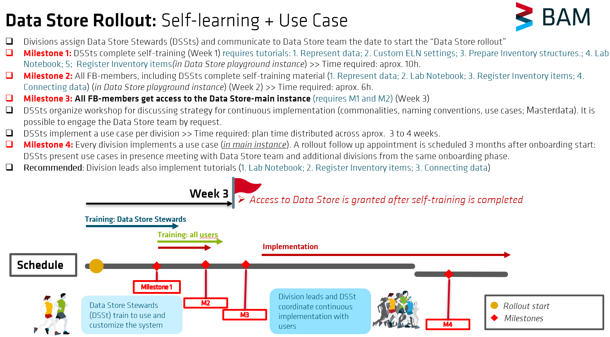

Data Store self-learning guideline
This guideline explains how the self-learning Data Store rollout is organized, which milestones a division is expected to complete, and how the tutorials build on one another.
The self-learning approach is designed to prepare both Data Store Stewards (DSSts) and division members (Users) for working with the Data Store in daily research-data workflows. DSSts first customize the division-specific environment and set an inventory structure. Users then learn how to document research activities, upload data, register Inventory objects and connect related information so that research data remain traceable.
The Data Store self-learning guideline is intended for:
- Divisions (FBs) that have not yet been onboarded to the Data Store. These divisions should follow the complete self-learning rollout concept described in this guideline.
- New BAM employees who work with research data and join a division that has already been onboarded. In this case, new employees should contact the Data Store Steward (DSSt) assigned to their division. Together with the DSSt, they follow Section 2: Tutorial sequence and responsibilities of this guideline and complete the tutorials relevant to their role.
1. Self-learning rollout concept
The rollout combines role-specific self-learning tutorials, a division workshop, the implementation of a first use case, and a later follow-up meeting.

Step 1: Assignment of Data Store Stewards
- The Data Store team informs the division about the role and requirements of Data Store Stewards.
- Division leads assign one or two Data Store Stewards (DSSts).
- The Data Store team coordinates the rollout start date together with the division leads and DSSts.
During the first week, DSSts read guidelines and complete the tutorials in the Data Store playground instance covering the following topics:
- Guideline to represent research data
- Customize ELN settings for the group
- Upload data in the Lab Notebook
- Prepare Invetory structures for the group
- Register Inventory items
Estimated time: approximately 10h.
All division members who handle research data (including DSSts) complete the tutorials in the **Data Store playground instance** covering the following topics:
- Guideline to represent research data
- Upload data in the Lab Notebook
- Register Inventory items
- Connect Lab Notebook data with inventory items
Estimated time: approximately 6 hours.
Once Milestones 1 and 2 are completed, all participating division members receive access to the Data Store main instance. From this point onward, the division's research data should be stored in the Data Store together with the required metadata and connections needed to make the research data traceable.
Step 2: Division workshop
The Data Store Stewards get familiar with Masterdata concepts, its definition workflow and organize a workshop within their division to define how the Data Store will be implemented in daily research workflows. Relevant topics include:
- Common data structures (research workflows, data models, etc.)
- Naming conventions for representing and organizing objects in the Data Store
- Use cases relevant to the division
- Roles and responsibilities for handling research data and integrating the Data Store in daily workflows
- Masterdata requirements, including the need for new Masterdata Entity Types (object types and controlled vocabularies)
The Data Store team can join the workshop upon request and provide support.
Each division implements a first Data Store use case led by the Data Store Steward(s).
Estimated time: approximately 2–3 weeks, depending on the complexity of the selected use case.
Step 3: Rollout follow-up
Approximately three months after Milestone 3, the Data Store team organizes an in-person rollout follow-up meeting with the Data Store Stewards and division leads. During this meeting, Data Store Stewards present the implemented use cases, share lessons learned, and discuss opportunities for further optimization together with the Data Store team.
Rollout at a glance
- Week 1: Data Store Stewards complete their onboarding tutorials.
- Week 2: Division members complete the user tutorials.
- Week 3: Division members receive access to the Data Store main instance.
- Following weeks: The division workshop is held and the first use case is implemented.
- Approximately three months after Milestone 3: The Data Store team conducts the rollout follow-up.
2. Tutorial sequence and responsibilities
The learning sequence starts with a guideline on how to represent research data in the Data Store. It is followed by five tutorials that use the same synthetic research example, “Material Synthesis.” Each tutorial builds on the results of the previous tutorial and represents one step in the process of implementing the Data Store in a division's daily research-data workflows.
The tutorial sequence covers five implementation steps: customizing the Electronic Lab Notebook (ELN), uploading research data in the Lab Notebook, preparing Inventory structures, registering Inventory objects, and connecting Lab Notebook data with the Inventory objects.
Each division has at least one assigned Data Store Steward (DSSt). DSSts, division leads, and their deputies have Group Admin rights, which allow them to perform the administrative tasks required to prepare the Data Store environment for their division.
Other division members have the User role in the invetory and work within the structures prepared for them. In the Lab Notebook, division members have the Admin role giving them the rights to manage the Lab Notebook contents independently.
In the Lab Notebook (ELN), division members have the Admin role. This gives them the rights required to work independently within the Lab Notebook.
Introduces the general concepts and principles for representing research data and related metadata in the Data Store. Read this guideline before starting the role-specific tutorials.
Link to guidelinePrepare the Lab Notebook settings required for the division before other users begin working in the ELN.
Link to tutorialRegister experimental steps and upload the associated research data.
Link to tutorialCreate the required Inventory projects and collections and register shared Inventory items needed by the division.
> Link to tutorialRegister Inventory items generated or used during the research workflow.
Link to tutorialConnect experimental steps with Inventory items (instruments, chemicals, samples) to make the research workflow traceable.
Link to tutorial *This tutorial will be provided by 04.09.2026What tutorial should I do?
| Tutorial | Main activity | DSSt | User |
|---|---|---|---|
| 1 | Guideline: represent research data in the Data Store | Required | Required |
| 2 | Customize ELN settings | Required | Not Required |
| 3 | Upload data in the Lab Notebook | Required | Required |
| 4 | Prepare Inventory structures | Required | Not Required |
| 5 | Register Inventory items | Required | Required |
| 6 | Connect Lab Notebook data with Inventory items | Required | Required |